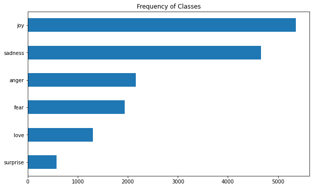
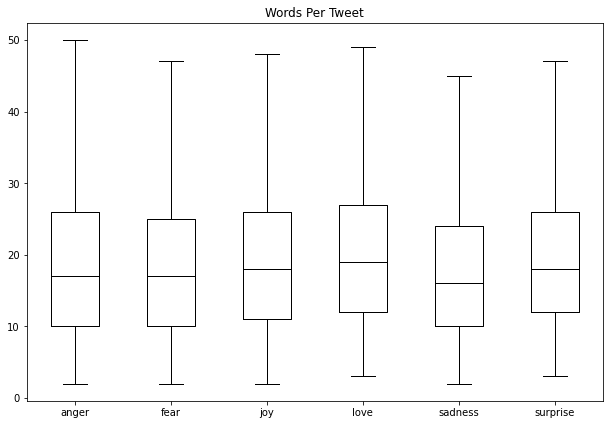
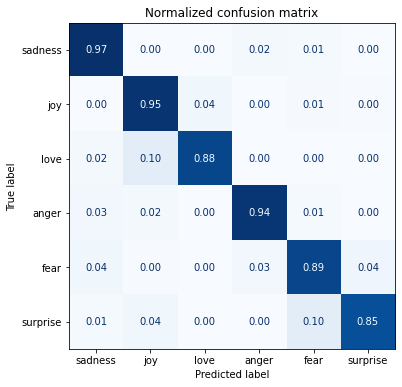
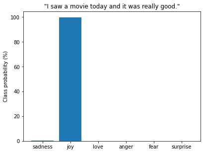
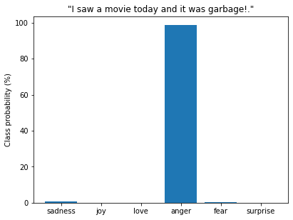
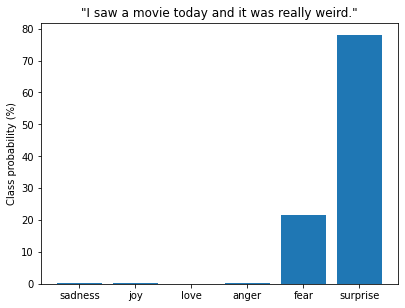

Notes on Transformers Book Ch. 2
- Project: Analyze Product Sentiment on Twitter
- The Dataset
- From Text to Tokens
- Training a Text Classifier
- Conclusion
- References
import transformers
import datasets
import pandas as pd
# Only print error messages
transformers.logging.set_verbosity_error()
datasets.logging.set_verbosity_error()transformers.__version__ '4.11.3'pd.set_option('max_colwidth',None)
pd.set_option('display.max_rows', None)
pd.set_option('display.max_columns', None)import ast
# https://astor.readthedocs.io/en/latest/
import astor
import inspect
import textwrap
def print_source(obj, exclude_doc=True):
# Get source code
source = inspect.getsource(obj)
# Remove any common leading whitespace from every line
cleaned_source = textwrap.dedent(source)
# Parse the source into an AST node.
parsed = ast.parse(cleaned_source)
for node in ast.walk(parsed):
# Skip any nodes that are not class or function definitions
if not isinstance(node, (ast.FunctionDef, ast.ClassDef, ast.AsyncFunctionDef)):
continue
if exclude_doc and len(node.body) > 1: node.body = node.body[1:]
print(astor.to_source(parsed))Project: Analyze Product Sentiment on Twitter
- Sentiment analysis involves classifying the feelings or opinions expressed in a given text.
- The goal is to build a system that automatically classifies emotions expressed in Twitter messages about a product.
- A model will take a single tweet as input and assign one of the possible labels.
- Possible labels include anger, fear, joy, love, sadness, and surprise.
- The project will use a variant of BERT called DistilBERT.
- DistilBERT, a distilled version of BERT: smaller, faster, cheaper and lighter
- DistilBERT achieves comparable accuracy to BERT while being significantly more efficient in size and speed.
- DistilBERT was created in 2019 by researchers at Hugging Face.
Hugging Face Project Pipeline:
- Load and process datasets using the Datasets library.
- Tokenize input texts using the Tokenizers library.
- Load, train, and run models using the Transformers library.
- Load metrics and evaluate models using the Datasets library.
The Dataset
- CARER: Contextualized Affect Representations for Emotion Recognition
- The authors of the paper created an emotion dataset of English twitter messages.
- The emotion dataset contains messages that express anger, fear, joy, love, sadness, or surprise.
- Emoticons present in the tweets determine the initial labels.
- A graph-based algorithm then uses these initial labels to construct contextualized, pattern-based emotion features.
- Word embeddings help further enrich these features.
- GitHub Repository
- Hugging Face Dataset Card
A First Look at Hugging Face Datasets
- GitHub Repository
- Documentation
- Hugging Face Datasets is based on Apache Arrow.
- Apache Arrow defines a typed columnar format that is more memory efficient than native Python.
from datasets import list_datasetsprint_source(list_datasets, exclude_doc=True) def list_datasets(with_community_datasets=True, with_details=False):
datasets = huggingface_hub.list_datasets(full=with_details)
if not with_community_datasets:
datasets = [dataset for dataset in datasets if '/' not in dataset.id]
if not with_details:
datasets = [dataset.id for dataset in datasets]
return datasets# Get a list of all the datasets scripts available on the Hugging Face Hub
all_datasets = list_datasets()
print(f"There are {len(all_datasets)} datasets currently available on the Hub")
print(f"The first 10 are: {all_datasets[:10]}") There are 3896 datasets currently available on the Hub
The first 10 are: ['acronym_identification', 'ade_corpus_v2', 'adversarial_qa', 'aeslc', 'afrikaans_ner_corpus', 'ag_news', 'ai2_arc', 'air_dialogue', 'ajgt_twitter_ar', 'allegro_reviews']from datasets import load_datasetload_dataset
- Documentation
- This method downloads and imports the loading script for the specified dataset.
- The script defines the citation, info, and format of the dataset, the URL to the original data files, and the code to load examples from the original files.
- The script downloads the dataset files and caches them in typed Apache Arrow tables.
- Several loading scripts are available to handle local and remote datasets.
Methods to Load Common Data Formats
| Data format | Loading script | Example |
|---|---|---|
| CSV | csv |
load_dataset("csv", data_files="my_file.csv") |
| Text | text |
load_dataset("text", data_files="my_file.txt") |
| JSON | json |
load_dataset("json", data_files="my_file.jsonl") |
print_source(load_dataset) def load_dataset(path: str, name: Optional[str]=None, data_dir: Optional[
str]=None, data_files: Optional[Union[str, Sequence[str], Mapping[str,
Union[str, Sequence[str]]]]]=None, split: Optional[Union[str, Split]]=
None, cache_dir: Optional[str]=None, features: Optional[Features]=None,
download_config: Optional[DownloadConfig]=None, download_mode: Optional
[GenerateMode]=None, ignore_verifications: bool=False, keep_in_memory:
Optional[bool]=None, save_infos: bool=False, revision: Optional[Union[
str, Version]]=None, use_auth_token: Optional[Union[bool, str]]=None,
task: Optional[Union[str, TaskTemplate]]=None, streaming: bool=False,
script_version='deprecated', **config_kwargs) ->Union[DatasetDict,
Dataset, IterableDatasetDict, IterableDataset]:
if script_version != 'deprecated':
warnings.warn(
"'script_version' was renamed to 'revision' in version 1.13 and will be removed in 1.15."
, FutureWarning)
revision = script_version
ignore_verifications = ignore_verifications or save_infos
builder_instance = load_dataset_builder(path=path, name=name, data_dir=
data_dir, data_files=data_files, cache_dir=cache_dir, features=
features, download_config=download_config, download_mode=
download_mode, revision=revision, use_auth_token=use_auth_token, **
config_kwargs)
if streaming:
extend_module_for_streaming(builder_instance.__module__,
use_auth_token=use_auth_token)
if not builder_instance.__module__.startswith('datasets.'):
for imports in get_imports(inspect.getfile(builder_instance.
__class__)):
if imports[0] == 'internal':
internal_import_name = imports[1]
internal_module_name = '.'.join(builder_instance.
__module__.split('.')[:-1] + [internal_import_name])
extend_module_for_streaming(internal_module_name,
use_auth_token=use_auth_token)
return builder_instance.as_streaming_dataset(split=split,
use_auth_token=use_auth_token)
try_from_hf_gcs = path not in _PACKAGED_DATASETS_MODULES
builder_instance.download_and_prepare(download_config=download_config,
download_mode=download_mode, ignore_verifications=
ignore_verifications, try_from_hf_gcs=try_from_hf_gcs,
use_auth_token=use_auth_token)
keep_in_memory = (keep_in_memory if keep_in_memory is not None else
is_small_dataset(builder_instance.info.dataset_size))
ds = builder_instance.as_dataset(split=split, ignore_verifications=
ignore_verifications, in_memory=keep_in_memory)
if task is not None:
ds = ds.prepare_for_task(task)
if save_infos:
builder_instance._save_infos()
return dsAutomated Process
# Download dataset from Hub
emotions = load_dataset("emotion")pd.DataFrame(list(emotions.cache_files.items()))| 0 | 1 | |
|---|---|---|
| 0 | train | [{‘filename’: ‘/home/innom-dt/.cache/huggingface/datasets/emotion/default/0.0.0/348f63ca8e27b3713b6c04d723efe6d824a56fb3d1449794716c0f0296072705/emotion-train.arrow’}] |
| 1 | validation | [{‘filename’: ‘/home/innom-dt/.cache/huggingface/datasets/emotion/default/0.0.0/348f63ca8e27b3713b6c04d723efe6d824a56fb3d1449794716c0f0296072705/emotion-validation.arrow’}] |
| 2 | test | [{‘filename’: ‘/home/innom-dt/.cache/huggingface/datasets/emotion/default/0.0.0/348f63ca8e27b3713b6c04d723efe6d824a56fb3d1449794716c0f0296072705/emotion-test.arrow’}] |
Manual Process - Local
# Get the download URLs
urls = list(emotions['train'].info.download_checksums.keys())
urls ['https://www.dropbox.com/s/1pzkadrvffbqw6o/train.txt?dl=1',
'https://www.dropbox.com/s/2mzialpsgf9k5l3/val.txt?dl=1',
'https://www.dropbox.com/s/ikkqxfdbdec3fuj/test.txt?dl=1']# Download each dataset to current directory
for url in urls:
# remove url parameters
url = url.split('?')[0]
# run the wget shell command in the jupyter notebook
!wget $url --2022-04-01 11:59:26-- https://www.dropbox.com/s/1pzkadrvffbqw6o/train.txt
Resolving www.dropbox.com (www.dropbox.com)... 162.125.7.18, 2620:100:6017:18::a27d:212
Connecting to www.dropbox.com (www.dropbox.com)|162.125.7.18|:443... connected.
HTTP request sent, awaiting response... 301 Moved Permanently
Location: /s/raw/1pzkadrvffbqw6o/train.txt [following]
--2022-04-01 11:59:26-- https://www.dropbox.com/s/raw/1pzkadrvffbqw6o/train.txt
Reusing existing connection to www.dropbox.com:443.
HTTP request sent, awaiting response... 302 Found
Location: https://ucd8bd8ccbe834141eed1bd4fe3f.dl.dropboxusercontent.com/cd/0/inline/BimHlqS8EcLnVO8-ErygeREvWupg-stxp_BKxrhhRBD8zXEOdQ5P-ssnFHFhv63Jx0wos3YwmuzmYs4Ex3iGW6lF430Y2yc4Y-ro00V20otuMPHh1I7x6YnZWmMe_xQOeM_-RNv_CbVeXC2wxDFZxE-TWzFuwjHo-RUy7RcwlYWMng/file# [following]
--2022-04-01 11:59:26-- https://ucd8bd8ccbe834141eed1bd4fe3f.dl.dropboxusercontent.com/cd/0/inline/BimHlqS8EcLnVO8-ErygeREvWupg-stxp_BKxrhhRBD8zXEOdQ5P-ssnFHFhv63Jx0wos3YwmuzmYs4Ex3iGW6lF430Y2yc4Y-ro00V20otuMPHh1I7x6YnZWmMe_xQOeM_-RNv_CbVeXC2wxDFZxE-TWzFuwjHo-RUy7RcwlYWMng/file
Resolving ucd8bd8ccbe834141eed1bd4fe3f.dl.dropboxusercontent.com (ucd8bd8ccbe834141eed1bd4fe3f.dl.dropboxusercontent.com)... 162.125.7.15, 2620:100:6017:15::a27d:20f
Connecting to ucd8bd8ccbe834141eed1bd4fe3f.dl.dropboxusercontent.com (ucd8bd8ccbe834141eed1bd4fe3f.dl.dropboxusercontent.com)|162.125.7.15|:443... connected.
HTTP request sent, awaiting response... 200 OK
Length: 1658616 (1.6M) [text/plain]
Saving to: ‘train.txt.8’
train.txt.8 100%[===================>] 1.58M --.-KB/s in 0.1s
2022-04-01 11:59:27 (12.6 MB/s) - ‘train.txt.8’ saved [1658616/1658616]
--2022-04-01 11:59:27-- https://www.dropbox.com/s/2mzialpsgf9k5l3/val.txt
Resolving www.dropbox.com (www.dropbox.com)... 162.125.7.18, 2620:100:6017:18::a27d:212
Connecting to www.dropbox.com (www.dropbox.com)|162.125.7.18|:443... connected.
HTTP request sent, awaiting response... 301 Moved Permanently
Location: /s/raw/2mzialpsgf9k5l3/val.txt [following]
--2022-04-01 11:59:27-- https://www.dropbox.com/s/raw/2mzialpsgf9k5l3/val.txt
Reusing existing connection to www.dropbox.com:443.
HTTP request sent, awaiting response... 302 Found
Location: https://ucd7c254cf6c0298b8fdea83c996.dl.dropboxusercontent.com/cd/0/inline/BinpUxjuQUPZKSAw9nVygw-6QF-JqzCuvRo2N8QqZPM8-Aqp5PxM0tHDJ3zclYqIKMhc_9_ORaLBDtdxeknAqfm_e3E0QJIYPA4tUpTQ7h31LAD_sc__6kyvioIZzjK61S5MlbTyM3YUMq3gPYMRH9_XE5gYrjnC1pddo3lRgrcUrg/file# [following]
--2022-04-01 11:59:27-- https://ucd7c254cf6c0298b8fdea83c996.dl.dropboxusercontent.com/cd/0/inline/BinpUxjuQUPZKSAw9nVygw-6QF-JqzCuvRo2N8QqZPM8-Aqp5PxM0tHDJ3zclYqIKMhc_9_ORaLBDtdxeknAqfm_e3E0QJIYPA4tUpTQ7h31LAD_sc__6kyvioIZzjK61S5MlbTyM3YUMq3gPYMRH9_XE5gYrjnC1pddo3lRgrcUrg/file
Resolving ucd7c254cf6c0298b8fdea83c996.dl.dropboxusercontent.com (ucd7c254cf6c0298b8fdea83c996.dl.dropboxusercontent.com)... 162.125.7.15, 2620:100:6017:15::a27d:20f
Connecting to ucd7c254cf6c0298b8fdea83c996.dl.dropboxusercontent.com (ucd7c254cf6c0298b8fdea83c996.dl.dropboxusercontent.com)|162.125.7.15|:443... connected.
HTTP request sent, awaiting response... 200 OK
Length: 204240 (199K) [text/plain]
Saving to: ‘val.txt.8’
val.txt.8 100%[===================>] 199.45K --.-KB/s in 0.09s
2022-04-01 11:59:28 (2.23 MB/s) - ‘val.txt.8’ saved [204240/204240]
--2022-04-01 11:59:28-- https://www.dropbox.com/s/ikkqxfdbdec3fuj/test.txt
Resolving www.dropbox.com (www.dropbox.com)... 162.125.7.18, 2620:100:6017:18::a27d:212
Connecting to www.dropbox.com (www.dropbox.com)|162.125.7.18|:443... connected.
HTTP request sent, awaiting response... 301 Moved Permanently
Location: /s/raw/ikkqxfdbdec3fuj/test.txt [following]
--2022-04-01 11:59:28-- https://www.dropbox.com/s/raw/ikkqxfdbdec3fuj/test.txt
Reusing existing connection to www.dropbox.com:443.
HTTP request sent, awaiting response... 302 Found
Location: https://uc6a6ed094f33148a8d600d0bd94.dl.dropboxusercontent.com/cd/0/inline/BileG7vM49CD4NPqfWBG0td8OcodftXS6fihHcq6NCZrPE8Xn9puhgIP1mCk-KXlQnwxW_3WTCdvFmmavZXbvU5qj_mu4PoCB4quNit8j4vVynpa3QWMxcPTiHfQB8UgZaKz319rr67HSjySTKFR1xvmTxTwZIsB0Ixss_Bem8ixQg/file# [following]
--2022-04-01 11:59:28-- https://uc6a6ed094f33148a8d600d0bd94.dl.dropboxusercontent.com/cd/0/inline/BileG7vM49CD4NPqfWBG0td8OcodftXS6fihHcq6NCZrPE8Xn9puhgIP1mCk-KXlQnwxW_3WTCdvFmmavZXbvU5qj_mu4PoCB4quNit8j4vVynpa3QWMxcPTiHfQB8UgZaKz319rr67HSjySTKFR1xvmTxTwZIsB0Ixss_Bem8ixQg/file
Resolving uc6a6ed094f33148a8d600d0bd94.dl.dropboxusercontent.com (uc6a6ed094f33148a8d600d0bd94.dl.dropboxusercontent.com)... 162.125.7.15, 2620:100:6017:15::a27d:20f
Connecting to uc6a6ed094f33148a8d600d0bd94.dl.dropboxusercontent.com (uc6a6ed094f33148a8d600d0bd94.dl.dropboxusercontent.com)|162.125.7.15|:443... connected.
HTTP request sent, awaiting response... 200 OK
Length: 206760 (202K) [text/plain]
Saving to: ‘test.txt.8’
test.txt.8 100%[===================>] 201.91K --.-KB/s in 0.07s
2022-04-01 11:59:29 (2.95 MB/s) - ‘test.txt.8’ saved [206760/206760]!head -5 train.txt i didnt feel humiliated;sadness
i can go from feeling so hopeless to so damned hopeful just from being around someone who cares and is awake;sadness
im grabbing a minute to post i feel greedy wrong;anger
i am ever feeling nostalgic about the fireplace i will know that it is still on the property;love
i am feeling grouchy;angerdataset_names = ['train', 'validation', 'test']
file_names = [url.split('?')[0].split('/')[-1] for url in urls]
data_files={name:file for name,file in zip(dataset_names, file_names)}
data_files {'train': 'train.txt', 'validation': 'val.txt', 'test': 'test.txt'}emotions_local = load_dataset("csv", data_files=data_files, sep=";", names=["text", "label"])emotions_local DatasetDict({
train: Dataset({
features: ['text', 'label'],
num_rows: 16000
})
validation: Dataset({
features: ['text', 'label'],
num_rows: 2000
})
test: Dataset({
features: ['text', 'label'],
num_rows: 2000
})
})pd.DataFrame(list(emotions_local.cache_files.items()))| 0 | 1 | |
|---|---|---|
| 0 | train | [{‘filename’: ‘/home/innom-dt/.cache/huggingface/datasets/csv/default-88fded83f2f02d15/0.0.0/bf68a4c4aefa545d0712b2fcbb1b327f905bbe2f6425fbc5e8c25234acb9e14a/csv-train.arrow’}] |
| 1 | validation | [{‘filename’: ‘/home/innom-dt/.cache/huggingface/datasets/csv/default-88fded83f2f02d15/0.0.0/bf68a4c4aefa545d0712b2fcbb1b327f905bbe2f6425fbc5e8c25234acb9e14a/csv-validation.arrow’}] |
| 2 | test | [{‘filename’: ‘/home/innom-dt/.cache/huggingface/datasets/csv/default-88fded83f2f02d15/0.0.0/bf68a4c4aefa545d0712b2fcbb1b327f905bbe2f6425fbc5e8c25234acb9e14a/csv-test.arrow’}] |
Manual Process - Remote
data_files = {name:url for name,url in zip(dataset_names,urls)}
data_files {'train': 'https://www.dropbox.com/s/1pzkadrvffbqw6o/train.txt?dl=1',
'validation': 'https://www.dropbox.com/s/2mzialpsgf9k5l3/val.txt?dl=1',
'test': 'https://www.dropbox.com/s/ikkqxfdbdec3fuj/test.txt?dl=1'}emotions_remote = load_dataset("csv", data_files=data_files, sep=";", names=["text", "label"])emotions_remote DatasetDict({
train: Dataset({
features: ['text', 'label'],
num_rows: 16000
})
validation: Dataset({
features: ['text', 'label'],
num_rows: 2000
})
test: Dataset({
features: ['text', 'label'],
num_rows: 2000
})
})pd.DataFrame(list(emotions_remote.cache_files.items()))| 0 | 1 | |
|---|---|---|
| 0 | train | [{‘filename’: ‘/home/innom-dt/.cache/huggingface/datasets/csv/default-6e495c0980795f6b/0.0.0/bf68a4c4aefa545d0712b2fcbb1b327f905bbe2f6425fbc5e8c25234acb9e14a/csv-train.arrow’}] |
| 1 | validation | [{‘filename’: ‘/home/innom-dt/.cache/huggingface/datasets/csv/default-6e495c0980795f6b/0.0.0/bf68a4c4aefa545d0712b2fcbb1b327f905bbe2f6425fbc5e8c25234acb9e14a/csv-validation.arrow’}] |
| 2 | test | [{‘filename’: ‘/home/innom-dt/.cache/huggingface/datasets/csv/default-6e495c0980795f6b/0.0.0/bf68a4c4aefa545d0712b2fcbb1b327f905bbe2f6425fbc5e8c25234acb9e14a/csv-test.arrow’}] |
DatasetDict
- Documentation
- A dictionary (dict of str: datasets.Dataset) with dataset transforms methods (map, filter, etc.)
emotions DatasetDict({
train: Dataset({
features: ['text', 'label'],
num_rows: 16000
})
validation: Dataset({
features: ['text', 'label'],
num_rows: 2000
})
test: Dataset({
features: ['text', 'label'],
num_rows: 2000
})
})Note: The data is already split into training, validation, and test sets.
Dataset
- Documentation
- The base class datasets.Dataset implements a Dataset backed by an Apache Arrow table.
- Behaves like an ordinary Python array or list.
train_ds = emotions["train"]
train_ds Dataset({
features: ['text', 'label'],
num_rows: 16000
})len(train_ds) 16000train_ds[0] {'text': 'i didnt feel humiliated', 'label': 0}train_ds.column_names ['text', 'label']# Check the data types used for text and labels.
print(train_ds.features) {'text': Value(dtype='string', id=None), 'label': ClassLabel(num_classes=6, names=['sadness', 'joy', 'love', 'anger', 'fear', 'surprise'], names_file=None, id=None)}ClassLabel
- Documentation
- Feature type for integer class labels.
- This class provides methods to convert integer labels to strings and strings to integer labels.
datasets.ClassLabel datasets.features.features.ClassLabelValue
datasets.Value datasets.features.features.Valueprint_source(datasets.Value, False) @dataclass
class Value:
"""
The Value dtypes are as follows:
null
bool
int8
int16
int32
int64
uint8
uint16
uint32
uint64
float16
float32 (alias float)
float64 (alias double)
timestamp[(s|ms|us|ns)]
timestamp[(s|ms|us|ns), tz=(tzstring)]
binary
large_binary
string
large_string
"""
dtype: str
id: Optional[str] = None
pa_type: ClassVar[Any] = None
_type: str = field(default='Value', init=False, repr=False)
def __post_init__(self):
if self.dtype == 'double':
self.dtype = 'float64'
if self.dtype == 'float':
self.dtype = 'float32'
self.pa_type = string_to_arrow(self.dtype)
def __call__(self):
return self.pa_type
def encode_example(self, value):
if pa.types.is_boolean(self.pa_type):
return bool(value)
elif pa.types.is_integer(self.pa_type):
return int(value)
elif pa.types.is_floating(self.pa_type):
return float(value)
elif pa.types.is_string(self.pa_type):
return str(value)
else:
return valueFrom Datasets to DataFrames
- Hugging Face Datasets provides a
set_formatmethod to convert Datasets objects to Pandas DataFrames. - The underlying data format is still an Arrow table.
DatasetDict.set_format
- Documentation
- Set the format for every Dataset object in the dictionary.
print_source(datasets.DatasetDict.set_format, exclude_doc=True) def set_format(self, type: Optional[str]=None, columns: Optional[List]=None,
output_all_columns: bool=False, **format_kwargs):
self._check_values_type()
for dataset in self.values():
dataset.set_format(type=type, columns=columns, output_all_columns=
output_all_columns, **format_kwargs)Dataset.set_format
- Documentation
- Set the
__getitem__return format.None(Python object),numpy,torch,tensorflow,pandas,arrow
print_source(datasets.Dataset.set_format, exclude_doc=True) @fingerprint_transform(inplace=True)
def set_format(self, type: Optional[str]=None, columns: Optional[List]=None,
output_all_columns: bool=False, **format_kwargs):
format_kwargs.update(format_kwargs.pop('format_kwargs', {}))
type = get_format_type_from_alias(type)
_ = get_formatter(type, features=self.features, **format_kwargs)
if isinstance(columns, str):
columns = [columns]
if isinstance(columns, tuple):
columns = list(columns)
if columns is not None and any(col not in self._data.column_names for
col in columns):
raise ValueError(
f'Columns {list(filter(lambda col: col not in self._data.column_names, columns))} not in the dataset. Current columns in the dataset: {self._data.column_names}'
)
if columns is not None:
columns = columns.copy()
self._format_type = type
self._format_kwargs = format_kwargs
self._format_columns = columns
self._output_all_columns = output_all_columns
logger.debug(
'Set __getitem__(key) output type to %s for %s columns (when key is int or slice) and %s output other (un-formatted) columns.'
, 'python objects' if type is None else type, 'no' if columns is
None else str(columns), 'do' if output_all_columns else "don't")emotions.set_format(type="pandas")
df = emotions["train"][:]
df.head()| text | label | |
|---|---|---|
| 0 | i didnt feel humiliated | 0 |
| 1 | i can go from feeling so hopeless to so damned hopeful just from being around someone who cares and is awake | 0 |
| 2 | im grabbing a minute to post i feel greedy wrong | 3 |
| 3 | i am ever feeling nostalgic about the fireplace i will know that it is still on the property | 2 |
| 4 | i am feeling grouchy | 3 |
ClassLabel.int2str
- Documentation
- Convert an integer label to the corresponding class name string.
print_source(datasets.ClassLabel.int2str) def int2str(self, values: Union[int, Iterable]):
assert isinstance(values, int) or isinstance(values, Iterable
), f'Values {values} should be an integer or an Iterable (list, numpy array, pytorch, tensorflow tensors)'
return_list = True
if isinstance(values, int):
values = [values]
return_list = False
for v in values:
if not 0 <= v < self.num_classes:
raise ValueError(f'Invalid integer class label {v:d}')
if self._int2str:
output = [self._int2str[int(v)] for v in values]
else:
output = [str(v) for v in values]
return output if return_list else output[0]# Get the corresponding emotion name
def label_int2str(row):
return emotions["train"].features["label"].int2str(row)
# Add a new column with the corresponding emotion name
df["emotion"] = df["label"].apply(label_int2str)
df.head()| text | label | emotion | |
|---|---|---|---|
| 0 | i didnt feel humiliated | 0 | sadness |
| 1 | i can go from feeling so hopeless to so damned hopeful just from being around someone who cares and is awake | 0 | sadness |
| 2 | im grabbing a minute to post i feel greedy wrong | 3 | anger |
| 3 | i am ever feeling nostalgic about the fireplace i will know that it is still on the property | 2 | love |
| 4 | i am feeling grouchy | 3 | anger |
Looking at the Class Distribution
- A Recipe for Training Neural Networks
- The first step to training a neural network involves thoroughly inspecting the data.
- Understand the distribution of the training examples and look for patterns.
- Datasets with skewed class distribution might require a different treatment regarding the training loss and evaluation metrics.
import matplotlib.pyplot as plt# Increase the figure size
plt.rcParams["figure.figsize"] = (10,6)
# Create a horizontal bar chart
df["emotion"].value_counts(ascending=True).plot.barh()
plt.title("Frequency of Classes")
plt.show()
# Reset the figure size
plt.rcParams["figure.figsize"] = plt.rcParamsDefault["figure.figsize"]
Note: Messages expressing joy and sadness are about 5-10 times more common than messages expressing love and surprise.
Methods to Deal with Imbalanced Data
- Randomly oversample the minority class.
- Randomly undersample the majority class.
- Gather more labeled data from the underrepresented classes.
imbalanced-learn
- Documentation
- This library extends scikit-learn and provides tools for dealing with imbalanced classes.
How Long Are Our Tweets?
- Transformer models have a maximum input sequence length called the maximum context size.
- The maximum context size for DistilBERT is 512 tokens, which is roughly equivalent to a few paragraphs of text.
- We need to truncate pieces of text that do not fit in a model’s context size, which might remove crucial information.
- We can approximate the number of tokens per twee for each emotion by looking at the distribution of words per tweet.
# Increase the figure size
plt.rcParams["figure.figsize"] = (10,7)
# Create a new column containing the number of words for each tweet
df["Words Per Tweet"] = df["text"].str.split().apply(len)
# Create a box plot
df.boxplot("Words Per Tweet", by="emotion", grid=False, showfliers=False, color="black")
plt.suptitle("")
plt.xlabel("")
plt.show()
# Reset the figure size
plt.rcParams["figure.figsize"] = plt.rcParamsDefault["figure.figsize"]
Note: Most tweets are between 15 and 20 words long, with a max length of around 50 words.
DatasetDict.reset_format()
- Documentation
- return format to python objects for all datasets in the dictionary
- calls
set_formatwith the default arguments
datasets.DatasetDict.reset_format <function datasets.dataset_dict.DatasetDict.reset_format(self)>print_source(datasets.DatasetDict.reset_format) def reset_format(self):
self._check_values_type()
for dataset in self.values():
dataset.set_format()print_source(datasets.Dataset.reset_format) def reset_format(self):
self.set_format()emotions.reset_format()From Text to Tokens
- Transformer models cannot receive raw strings as input.
- Text first needs to be tokenized and encoded as numerical vectors.
- The three main tokenization strategies are character tokenization, word tokenization, and subword tokenization.
IMPORTANT: Use the same tokenizer when training, fine-tuning, and performing inference with a given model.
Character Tokenization
- Character-based tokenizers split the text into single characters.
- Character tokenization results in a smaller vocabulary and much fewer out-of-vocabulary tokens.
- It also results in a much higher number of tokens for a given input sequence.
- A character-based representation is less meaningful compared to using words.
- The model needs to learn linguistic structures like words from the data, making training more expensive.
- Most projects do not use character tokenization.
text = "Tokenizing text is a core task of NLP."
tokenized_text = list(text)
print(tokenized_text) ['T', 'o', 'k', 'e', 'n', 'i', 'z', 'i', 'n', 'g', ' ', 't', 'e', 'x', 't', ' ', 'i', 's', ' ', 'a', ' ', 'c', 'o', 'r', 'e', ' ', 't', 'a', 's', 'k', ' ', 'o', 'f', ' ', 'N', 'L', 'P', '.']Numericalization
- Models can only process numbers, so we need to encode tokens as numerical data.
- A simple encoding method is to convert each unique token to a unique integer.
# Map each unique token to a unique integer
token2idx = {ch: idx for idx, ch in enumerate(sorted(set(tokenized_text)))}
print(token2idx) {' ': 0, '.': 1, 'L': 2, 'N': 3, 'P': 4, 'T': 5, 'a': 6, 'c': 7, 'e': 8, 'f': 9, 'g': 10, 'i': 11, 'k': 12, 'n': 13, 'o': 14, 'r': 15, 's': 16, 't': 17, 'x': 18, 'z': 19}# Encode the tokenized text
input_ids = [token2idx[token] for token in tokenized_text]
print(input_ids) [5, 14, 12, 8, 13, 11, 19, 11, 13, 10, 0, 17, 8, 18, 17, 0, 11, 16, 0, 6, 0, 7, 14, 15, 8, 0, 17, 6, 16, 12, 0, 14, 9, 0, 3, 2, 4, 1]One-hot Encoding
- It is common to encode categorical variables as one-hot vectors, where a single entry has the value 1, and every other entry has the value 0.
- One-hot encoding can help prevent the model from learning undesired relationships like fictitious ordering between names.
# Sample categorical data
categorical_df = pd.DataFrame(
{"Name": ["Bumblebee", "Optimus Prime", "Megatron"], "Label ID": [0,1,2]})
categorical_df| Name | Label ID | |
|---|---|---|
| 0 | Bumblebee | 0 |
| 1 | Optimus Prime | 1 |
| 2 | Megatron | 2 |
Note: A model might interpret the order of values in the Label ID column as significant.
# Create one-hot vectors for each unique value in the Name column
pd.get_dummies(categorical_df["Name"])| Bumblebee | Megatron | Optimus Prime | |
|---|---|---|---|
| 0 | 1 | 0 | 0 |
| 1 | 0 | 0 | 1 |
| 2 | 0 | 1 | 0 |
Note: We can use this approach to prevent the model from learning similar undesired relationships in the input_ids list.
import torch
import torch.nn.functional as FPyTorch one_hot:
- Documentation
- Generate one-hot encodings for a tensor with a specified number of classes
len(input_ids), len(token2idx) (38, 20)# Convert input_ids list to a tensor
input_ids = torch.tensor(input_ids)
# Generate one-hot encodings
one_hot_encodings = F.one_hot(input_ids, num_classes=len(token2idx))
one_hot_encodings.shape torch.Size([38, 20])Note: Make sure to set num_classes to the vocabulary size.
print(f"Token: {tokenized_text[0]}")
print(f"Tensor index: {input_ids[0]}")
print(f"One-hot: {one_hot_encodings[0]}") Token: T
Tensor index: 5
One-hot: tensor([0, 0, 0, 0, 0, 1, 0, 0, 0, 0, 0, 0, 0, 0, 0, 0, 0, 0, 0, 0])Word Tokenization
- Word-based tokenizers split the text into words and map each word to an integer.
- Word tokenization creates less work for the model as it does not need to learn such linguistic structures from the data.
- There is a loss of meaning across very similar words.
- User-defined rules tell the tokenizer how to split the raw text into words.
- A simple tokenization method is to split text using whitespace.
- More sophisticated word tokenizers have additional rules to handle punctuation.
- Other methods involve stemming or lemmatization to normalize words to their stem.
- Example: “great”, “greater”, and “greatest” all become “great”
- These methods come at the expense of losing some information in the text.
- Word tokenization results in a bigger vocabulary size, which requires more model parameters.
- The first layer for a model that compressed the input vectors for a vocabulary with one million unique words to one thousand dimensional vectors would contain one billion weights.
- A popular method to limit the vocabulary size involves only adding the 100,000 most common words in the corpus.
- Words that are not part of the vocabulary are classified as unknown and mapped to a shared token.
- This approach risks losing potentially important information related to rare words.
tokenized_text = text.split()
print(tokenized_text) ['Tokenizing', 'text', 'is', 'a', 'core', 'task', 'of', 'NLP.']Subword Tokenization
- Subword tokenization algorithms decompose rare words into meaningful subwords while keeping the most frequently used words as unique entities.
- Subword tokenization algorithms can identify start-of-word tokens.
- Most state-of-the-art English models use subword-tokenization.
- Subword tokenization helps keep vocabulary size and input length manageable by sharing information across different words.
- There are several tokenization methods used in NLP.
- The tokenizers for both the BERT and DistilBERT models use WordPiece.
- GPT-2 uses Byte Pair Encoding.
- Several multilingual models use SentencePiece or Unigram Segmentation.
from transformers import AutoTokenizerAutoTokenizer
- Documentation
- Quickly load the tokenizer associated with a pretrained model.
- AutoTokenizer belongs to a set of auto classes that automatically retrieve the model’s configuration, pretrained weights, or vocabulary from the name of a checkpoint.
AutoTokenizer transformers.models.auto.tokenization_auto.AutoTokenizermodel_ckpt = "distilbert-base-uncased"
tokenizer = AutoTokenizer.from_pretrained(model_ckpt)Note: Hugging Face automatically caches the parameters of the pretrained tokenizer after the first download.
type(tokenizer)transformers.models.distilbert.tokenization_distilbert_fast.DistilBertTokenizerFastDistilBertTokenizerFast
- Documentation
- Construct a “fast” DistilBERT tokenizer that runs end-to-end tokenization, including punctuation and WordPiece.
tokenizer PreTrainedTokenizerFast(name_or_path='distilbert-base-uncased', vocab_size=30522, model_max_len=512, is_fast=True, padding_side='right', special_tokens={'unk_token': '[UNK]', 'sep_token': '[SEP]', 'pad_token': '[PAD]', 'cls_token': '[CLS]', 'mask_token': '[MASK]'})tokenizer.init_kwargs {'do_lower_case': True,
'unk_token': '[UNK]',
'sep_token': '[SEP]',
'pad_token': '[PAD]',
'cls_token': '[CLS]',
'mask_token': '[MASK]',
'tokenize_chinese_chars': True,
'strip_accents': None,
'model_max_length': 512,
'special_tokens_map_file': None,
'name_or_path': 'distilbert-base-uncased'}print(text) Tokenizing text is a core task of NLP.# Map the raw text content to unique integers
encoded_text = tokenizer(text)
print(encoded_text) {'input_ids': [101, 19204, 6026, 3793, 2003, 1037, 4563, 4708, 1997, 17953, 2361, 1012, 102], 'attention_mask': [1, 1, 1, 1, 1, 1, 1, 1, 1, 1, 1, 1, 1]}convert_ids_to_tokens
- Documentation
- Convert a single index or a sequence of indices in a token or a sequence of tokens, using the vocabulary and added tokens.
print_source(tokenizer.convert_ids_to_tokens) def convert_ids_to_tokens(self, ids: Union[int, List[int]],
skip_special_tokens: bool=False) ->Union[str, List[str]]:
if isinstance(ids, int):
return self._tokenizer.id_to_token(ids)
tokens = []
for index in ids:
index = int(index)
if skip_special_tokens and index in self.all_special_ids:
continue
tokens.append(self._tokenizer.id_to_token(index))
return tokens# Convert integer ids to tokens
tokens = tokenizer.convert_ids_to_tokens(encoded_text.input_ids)
print(tokens) ['[CLS]', 'token', '##izing', 'text', 'is', 'a', 'core', 'task', 'of', 'nl', '##p', '.', '[SEP]']Note: 1. The [CLS] and [SEP] tokens indicate the start and end of a sequence respectively. 2. All the tokens are lower case. 3. The words “tokenizing” and “NLP” have been decomposed into subwords since they are rare. 4. The ## prefix indicates the preceding string was not whitespace.
# Convert tokens to plain text
print(tokenizer.convert_tokens_to_string(tokens)) [CLS] tokenizing text is a core task of nlp. [SEP]print_source(tokenizer.convert_tokens_to_string) def convert_tokens_to_string(self, tokens: List[str]) ->str:
return self.backend_tokenizer.decoder.decode(tokens)tokenizer.vocab_size 30522tokenizer.model_max_length 512tokenizer.model_input_names ['input_ids', 'attention_mask']Tokenizing the Whole Dataset
- We need to define a processing function to tokenize training examples.
def tokenize(batch):
# Apply the tokenizer to a batch of examples
return tokenizer(batch["text"],
# Pad examples with zeros to the longest one in the batch
padding=True,
# Truncate the examples to the model's maximum context size
truncation=True)print(tokenize(emotions["train"][:2])) {'input_ids': [[101, 1045, 2134, 2102, 2514, 26608, 102, 0, 0, 0, 0, 0, 0, 0, 0, 0, 0, 0, 0, 0, 0, 0, 0], [101, 1045, 2064, 2175, 2013, 3110, 2061, 20625, 2000, 2061, 9636, 17772, 2074, 2013, 2108, 2105, 2619, 2040, 14977, 1998, 2003, 8300, 102]], 'attention_mask': [[1, 1, 1, 1, 1, 1, 1, 0, 0, 0, 0, 0, 0, 0, 0, 0, 0, 0, 0, 0, 0, 0, 0], [1, 1, 1, 1, 1, 1, 1, 1, 1, 1, 1, 1, 1, 1, 1, 1, 1, 1, 1, 1, 1, 1, 1]]}Note: 1. The zeros have a corresponding [PAD] token in the vocabulary. 2. The attention mask allows the model to ignore padded parts of the input.
tokens2ids = list(zip(tokenizer.all_special_tokens, tokenizer.all_special_ids))
data = sorted(tokens2ids, key=lambda x : x[-1])
df = pd.DataFrame(data, columns=["Special Token", "Special Token ID"])
df.T| 0 | 1 | 2 | 3 | 4 | |
|---|---|---|---|---|---|
| Special Token | [PAD] | [UNK] | [CLS] | [SEP] | [MASK] |
| Special Token ID | 0 | 100 | 101 | 102 | 103 |
DatasetDict.map
- Documentation
- Apply a function to all the elements in the tables for all datasets in the dictionary.
print_source(datasets.DatasetDict.map) def map(self, function, with_indices: bool=False, input_columns: Optional[
Union[str, List[str]]]=None, batched: bool=False, batch_size: Optional[
int]=1000, remove_columns: Optional[Union[str, List[str]]]=None,
keep_in_memory: bool=False, load_from_cache_file: bool=True,
cache_file_names: Optional[Dict[str, Optional[str]]]=None,
writer_batch_size: Optional[int]=1000, features: Optional[Features]=
None, disable_nullable: bool=False, fn_kwargs: Optional[dict]=None,
num_proc: Optional[int]=None, desc: Optional[str]=None) ->'DatasetDict':
self._check_values_type()
if cache_file_names is None:
cache_file_names = {k: None for k in self}
return DatasetDict({k: dataset.map(function=function, with_indices=
with_indices, input_columns=input_columns, batched=batched,
batch_size=batch_size, remove_columns=remove_columns,
keep_in_memory=keep_in_memory, load_from_cache_file=
load_from_cache_file, cache_file_name=cache_file_names[k],
writer_batch_size=writer_batch_size, features=features,
disable_nullable=disable_nullable, fn_kwargs=fn_kwargs, num_proc=
num_proc, desc=desc) for k, dataset in self.items()})Dataset.map
- Documentation
- Apply a function to all the examples in the table and update the table.
# Apply the processing function across all splits in the corpus in batches
emotions_encoded = emotions.map(tokenize, batched=True, batch_size=None)Note: * The map function applies the processing function to the entire dataset as a single batch when the batch size is None. * This approach ensures the input tensors and attention masks have the same shape globally.
print(emotions_encoded["train"].column_names) ['attention_mask', 'input_ids', 'label', 'text']Training a Text Classifier
- Models like DistilBERT are pretrained to predict masked words in a sequence, and we need to modify them for text classification.
- We can combine the body of the pretrained model with a custom classification head.
Architecture of an Encoder-Based Classifier
- Tokenize the text and represent it as one-hot vectors called token encodings.
- The size of the tokenized vocabulary determines the dimensions of the token encodings and usually consists of 20 thousand to 200 thousand unique tokens.
- Convert the token encodings to token embeddings, which are vectors living in the lowe-dimensional space.
- Pass the token embeddings through the encoder block layers, which yield a hidden state for each input token.
- Replace the pretrained language modeling layer with a classification layer.
Note: PyTorch skips the step of creating one-hot vectors because multiplying a matrix with a one-hot vector is the same as selecting a column with the token ID from the matrix.
Methods to Train a Text Classifier
Feature Extraction
- Use the hidden states as features and train the classifier on them without modifying the pretrained model.
Fine-tuning
- Train the whole model end-to-end, which also updates the parameters of the pretrained model.
Transformers as Feature Extractors
- This method is well-suited for quickly training a small or shallow model.
- The model could be a neural classification layer or a method that does not rely on gradients like random forests.
- Using the transformer as a feature extractor is especially useful when GPUs are unavailable since the hidden states only need to be precomputed once.
Using pretrained models
from transformers import AutoModelAutoModel.from_pretrained
- Documentation
- Instantiate one of the base model classes of the library from a pretrained model.
print_source(AutoModel.from_pretrained) @classmethod
def from_pretrained(cls, pretrained_model_name_or_path, *model_args, **kwargs):
trust_remote_code = kwargs.pop('trust_remote_code', False)
kwargs['_from_auto'] = True
if not isinstance(config, PretrainedConfig):
config, kwargs = AutoConfig.from_pretrained(
pretrained_model_name_or_path, return_unused_kwargs=True, **kwargs)
if hasattr(config, 'auto_map') and cls.__name__ in config.auto_map:
if not trust_remote_code:
raise ValueError(
f'Loading {pretrained_model_name_or_path} requires you to execute the modeling file in that repo on your local machine. Make sure you have read the code there to avoid malicious use, then set the option `trust_remote_code=True` to remove this error.'
)
if kwargs.get('revision', None) is None:
logger.warn(
'Explicitly passing a `revision` is encouraged when loading a model with custom code to ensure no malicious code has been contributed in a newer revision.'
)
class_ref = config.auto_map[cls.__name__]
module_file, class_name = class_ref.split('.')
model_class = get_class_from_dynamic_module(
pretrained_model_name_or_path, module_file + '.py', class_name,
**kwargs)
return model_class.from_pretrained(pretrained_model_name_or_path, *
model_args, config=config, **kwargs)
elif type(config) in cls._model_mapping.keys():
model_class = _get_model_class(config, cls._model_mapping)
return model_class.from_pretrained(pretrained_model_name_or_path, *
model_args, config=config, **kwargs)
raise ValueError(
f"""Unrecognized configuration class {config.__class__} for this kind of AutoModel: {cls.__name__}.
Model type should be one of {', '.join(c.__name__ for c in cls._model_mapping.keys())}."""
)model_ckpt = "distilbert-base-uncased"
# Use a CUDA GPU if available
device = torch.device("cuda" if torch.cuda.is_available() else "cpu")
# Instantiate a pretrained DistilBertModel
model = AutoModel.from_pretrained(model_ckpt).to(device)model DistilBertModel(
(embeddings): Embeddings(
(word_embeddings): Embedding(30522, 768, padding_idx=0)
(position_embeddings): Embedding(512, 768)
(LayerNorm): LayerNorm((768,), eps=1e-12, elementwise_affine=True)
(dropout): Dropout(p=0.1, inplace=False)
)
(transformer): Transformer(
(layer): ModuleList(
(0): TransformerBlock(
(attention): MultiHeadSelfAttention(
(dropout): Dropout(p=0.1, inplace=False)
(q_lin): Linear(in_features=768, out_features=768, bias=True)
(k_lin): Linear(in_features=768, out_features=768, bias=True)
(v_lin): Linear(in_features=768, out_features=768, bias=True)
(out_lin): Linear(in_features=768, out_features=768, bias=True)
)
(sa_layer_norm): LayerNorm((768,), eps=1e-12, elementwise_affine=True)
(ffn): FFN(
(dropout): Dropout(p=0.1, inplace=False)
(lin1): Linear(in_features=768, out_features=3072, bias=True)
(lin2): Linear(in_features=3072, out_features=768, bias=True)
)
(output_layer_norm): LayerNorm((768,), eps=1e-12, elementwise_affine=True)
)
(1): TransformerBlock(
(attention): MultiHeadSelfAttention(
(dropout): Dropout(p=0.1, inplace=False)
(q_lin): Linear(in_features=768, out_features=768, bias=True)
(k_lin): Linear(in_features=768, out_features=768, bias=True)
(v_lin): Linear(in_features=768, out_features=768, bias=True)
(out_lin): Linear(in_features=768, out_features=768, bias=True)
)
(sa_layer_norm): LayerNorm((768,), eps=1e-12, elementwise_affine=True)
(ffn): FFN(
(dropout): Dropout(p=0.1, inplace=False)
(lin1): Linear(in_features=768, out_features=3072, bias=True)
(lin2): Linear(in_features=3072, out_features=768, bias=True)
)
(output_layer_norm): LayerNorm((768,), eps=1e-12, elementwise_affine=True)
)
(2): TransformerBlock(
(attention): MultiHeadSelfAttention(
(dropout): Dropout(p=0.1, inplace=False)
(q_lin): Linear(in_features=768, out_features=768, bias=True)
(k_lin): Linear(in_features=768, out_features=768, bias=True)
(v_lin): Linear(in_features=768, out_features=768, bias=True)
(out_lin): Linear(in_features=768, out_features=768, bias=True)
)
(sa_layer_norm): LayerNorm((768,), eps=1e-12, elementwise_affine=True)
(ffn): FFN(
(dropout): Dropout(p=0.1, inplace=False)
(lin1): Linear(in_features=768, out_features=3072, bias=True)
(lin2): Linear(in_features=3072, out_features=768, bias=True)
)
(output_layer_norm): LayerNorm((768,), eps=1e-12, elementwise_affine=True)
)
(3): TransformerBlock(
(attention): MultiHeadSelfAttention(
(dropout): Dropout(p=0.1, inplace=False)
(q_lin): Linear(in_features=768, out_features=768, bias=True)
(k_lin): Linear(in_features=768, out_features=768, bias=True)
(v_lin): Linear(in_features=768, out_features=768, bias=True)
(out_lin): Linear(in_features=768, out_features=768, bias=True)
)
(sa_layer_norm): LayerNorm((768,), eps=1e-12, elementwise_affine=True)
(ffn): FFN(
(dropout): Dropout(p=0.1, inplace=False)
(lin1): Linear(in_features=768, out_features=3072, bias=True)
(lin2): Linear(in_features=3072, out_features=768, bias=True)
)
(output_layer_norm): LayerNorm((768,), eps=1e-12, elementwise_affine=True)
)
(4): TransformerBlock(
(attention): MultiHeadSelfAttention(
(dropout): Dropout(p=0.1, inplace=False)
(q_lin): Linear(in_features=768, out_features=768, bias=True)
(k_lin): Linear(in_features=768, out_features=768, bias=True)
(v_lin): Linear(in_features=768, out_features=768, bias=True)
(out_lin): Linear(in_features=768, out_features=768, bias=True)
)
(sa_layer_norm): LayerNorm((768,), eps=1e-12, elementwise_affine=True)
(ffn): FFN(
(dropout): Dropout(p=0.1, inplace=False)
(lin1): Linear(in_features=768, out_features=3072, bias=True)
(lin2): Linear(in_features=3072, out_features=768, bias=True)
)
(output_layer_norm): LayerNorm((768,), eps=1e-12, elementwise_affine=True)
)
(5): TransformerBlock(
(attention): MultiHeadSelfAttention(
(dropout): Dropout(p=0.1, inplace=False)
(q_lin): Linear(in_features=768, out_features=768, bias=True)
(k_lin): Linear(in_features=768, out_features=768, bias=True)
(v_lin): Linear(in_features=768, out_features=768, bias=True)
(out_lin): Linear(in_features=768, out_features=768, bias=True)
)
(sa_layer_norm): LayerNorm((768,), eps=1e-12, elementwise_affine=True)
(ffn): FFN(
(dropout): Dropout(p=0.1, inplace=False)
(lin1): Linear(in_features=768, out_features=3072, bias=True)
(lin2): Linear(in_features=3072, out_features=768, bias=True)
)
(output_layer_norm): LayerNorm((768,), eps=1e-12, elementwise_affine=True)
)
)
)
)Creating a feature matrix
- We can use the hidden states as input features and the labels as targets.
import numpy as np# Get the input and target data for the training and validation sets
X_train = np.array(emotions_hidden["train"]["hidden_state"])
X_valid = np.array(emotions_hidden["validation"]["hidden_state"])
y_train = np.array(emotions_hidden["train"]["label"])
y_valid = np.array(emotions_hidden["validation"]["label"])
X_train.shape, X_valid.shape ((16000, 768), (2000, 768))X_train[0].size, y_train[0].size (768, 1)Visualizing the training set
from umap import UMAP
from sklearn.preprocessing import MinMaxScalerUMAP: Uniform Manifold Approximation and Projection for Dimension Reduction
- Documentation
- UMAP is a dimension reduction technique that can be useful for visualization as a drop-in replacement for t-SNE.
- We can use the UMAP algorithm to scale the 768-dimensional vectors down to a 2-dimensional representation.
- UMAP works best with feature values scaled to
[0,1].
Scit-Kit Learn MinMaxScaler
- Documentation
- Transform features by scaling each to a given range.
# Scale features to [0,1] range
X_scaled = MinMaxScaler().fit_transform(X_train)
# Initialize and fit UMAP
mapper = UMAP(n_components=2, metric="cosine").fit(X_scaled)
# Create a DataFrame of 2D embeddings
df_emb = pd.DataFrame(mapper.embedding_, columns=["X", "Y"])
df_emb["label"] = y_train
df_emb.head()| X | Y | label | |
|---|---|---|---|
| 0 | 4.345317 | 6.545871 | 0 |
| 1 | -2.770711 | 5.816418 | 0 |
| 2 | 5.433491 | 3.048345 | 3 |
| 3 | -2.210309 | 3.550199 | 2 |
| 4 | -3.055895 | 3.723285 | 3 |
Note: The UMAP algorithm has compressed the hidden state vectors from 768 dimensions to 2 dimensions.
matplotlib.pyplot.hexbin
- Documentation
- Make a 2D hexagonal binning plot of points x, y.
fig, axes = plt.subplots(2, 3, figsize=(14,10))
# Collapse the array into one dimension
axes = axes.flatten()
cmaps = ["Greys", "Blues", "Oranges", "Reds", "Purples", "Greens"]
labels = emotions["train"].features["label"].names
for i, (label, cmap) in enumerate(zip(labels, cmaps)):
df_emb_sub = df_emb.query(f"label == {i}")
axes[i].hexbin(df_emb_sub["X"], df_emb_sub["Y"], cmap=cmap, gridsize=20, linewidths=(0,))
axes[i].set_title(label)
axes[i].set_xticks([]), axes[i].set_yticks([])
# Adjust the padding between and around subplots.
plt.tight_layout()
plt.show()
Note: * The negative feelings such as sadness, anger, and fear occupy similar regions in the hidden state with slightly varying distributions. * The positive emotions, joy, and love, are well separated from the negative emotions and share a similar space. * Surprise is scattered all over the place. * The model did not train to know the difference between these emotions. It learned them implicitly by guessing masked words in the training corpus. * Just because some categories overlap when projected onto a lower-dimensional space does not mean they are not separable in the original space.
Training a simple classifier
- We can use the hidden states to train a simple logistic regression model.
- This type of model is trains quickly and does not require a GPU.
from sklearn.linear_model import LogisticRegressionsklearn.linear_model.LogisticRegression
- Documentation
- Logistic Regression classifier
# Increase `max_iter` to guarantee convergence
lr_clf = LogisticRegression(max_iter=3000)
lr_clf.fit(X_train, y_train) LogisticRegression(max_iter=3000)lr_clf.score(X_valid, y_valid) 0.6335Note: The model performs well, considering the training data is unbalanced.
from sklearn.dummy import DummyClassifiersklearn.dummy.DummyClassifier
- Documentation
- A DummyClassifier makes predictions using a predefined strategy and ignores the input features.
- The classifier serves as a simple baseline to compare against other more complex classifiers.
# Set the DummyClassifier to always select the most frequent class
dummy_clf = DummyClassifier(strategy="most_frequent")
dummy_clf.fit(X_train, y_train)
dummy_clf.score(X_valid, y_valid) 0.352Note: The simple logistic regression classifier performs significantly better than a model that always selects the most frequent class.
from sklearn.metrics import ConfusionMatrixDisplay, confusion_matrixsklearn.metrics.ConfusionMatrixDisplay
- Documentation
- Create a confusion matrix visualization
sklearn.metrics.confusion_matrix
- Documentation
- Compute confusion matrix to evaluate the accuracy of a classification.
def plot_confusion_matrix(y_preds, y_true, labels):
cm = confusion_matrix(y_true, y_preds, normalize="true")
fig, ax = plt.subplots(figsize=(6, 6))
disp = ConfusionMatrixDisplay(confusion_matrix=cm, display_labels=labels)
disp.plot(cmap="Blues", values_format=".2f", ax=ax, colorbar=False)
plt.title("Normalized confusion matrix")
plt.show()
y_preds = lr_clf.predict(X_valid)
plot_confusion_matrix(y_preds, y_valid, labels)
Note: * Anger and fear are most often confused with sadness. * Love and surprise are frequently mistaken for joy.
Fine-Tuning Transformers
- Fine-tuning results in superior performance than feature extraction but requires more computational resources such as GPUs.
- Fine-tuning involves training the hidden states, so the classification head needs to be differentiable.
- Training the hidden states that serve as input to the classifier helps avoid the problem of working with data that may not be well suited for the classification task.
Loading a pretrained model
from transformers import AutoModelForSequenceClassificationAutoModelForSequenceClassification.from_pretrained
- Documentation
- Instantiate one of the model classes of the library (with a sequence classification head) from a pretrained model.
# Specify the number of labels (i.e. the number of emotions)
num_labels = 6
model = (AutoModelForSequenceClassification
.from_pretrained(model_ckpt, num_labels=num_labels)
.to(device))Note: The classifier head is randomly initialized.
type(model)transformers.models.distilbert.modeling_distilbert.DistilBertForSequenceClassificationDistilBertForSequenceClassification
- Documentation
- DistilBert Model transformer with a sequence classification head on top
for child in model.named_children(): print(child[0]) distilbert
pre_classifier
classifier
dropoutlist(model.named_children())[-3:] [('pre_classifier', Linear(in_features=768, out_features=768, bias=True)),
('classifier', Linear(in_features=768, out_features=6, bias=True)),
('dropout', Dropout(p=0.2, inplace=False))]Defining the performance metrics
- We need to define a function to compute metrics for the trainer so we can monitor performance during training.
- The function receives an EvalPrediction object containing predictions and label_ids attributes and returns a dictionary that maps each metric’s name to its value.
from sklearn.metrics import accuracy_score, f1_scoresklearn.metrics.f1_score
- Documentation
- Compute the \(F_{1}\)-score
sklearn.metrics.accuracy_score
- Documentation
- Compute the classification accuracy score.
def compute_metrics(pred):
labels = pred.label_ids
preds = pred.predictions.argmax(-1)
f1 = f1_score(labels, preds, average="weighted")
acc = accuracy_score(labels, preds)
return {"accuracy": acc, "f1": f1}Training the model
- We can use the Hugging Face Hub API to push our fine-tuned model to our account on the Hub and share it with the community.
from huggingface_hub import notebook_logininspect.getdoc(notebook_login) 'Displays a widget to login to the HF website and store the token.'print_source(notebook_login) def notebook_login():
try:
import ipywidgets.widgets as widgets
from IPython.display import clear_output, display
except ImportError:
raise ImportError(
'The `notebook_login` function can only be used in a notebook (Jupyter or Colab) and you need the `ipywdidgets` module: `pip install ipywidgets`.'
)
box_layout = widgets.Layout(display='flex', flex_flow='column',
align_items='center', width='50%')
token_widget = widgets.Password(description='Token:')
token_finish_button = widgets.Button(description='Login')
switch_button = widgets.Button(description='Use password')
login_token_widget = widgets.VBox([widgets.HTML(
NOTEBOOK_LOGIN_TOKEN_HTML_START), token_widget, token_finish_button,
widgets.HTML(NOTEBOOK_LOGIN_TOKEN_HTML_END), switch_button], layout
=box_layout)
display(login_token_widget)
input_widget = widgets.Text(description='Username:')
password_widget = widgets.Password(description='Password:')
password_finish_button = widgets.Button(description='Login')
login_password_widget = widgets.VBox([widgets.HTML(value=
NOTEBOOK_LOGIN_PASSWORD_HTML), widgets.HBox([input_widget,
password_widget]), password_finish_button], layout=box_layout)
def login_token_event(t):
token_widget.value = ''
clear_output()
_login(HfApi(), token=token)
token_finish_button.on_click(login_token_event)
def login_password_event(t):
password = password_widget.value
password_widget.value = ''
clear_output()
_login(HfApi(), username=username, password=password)
password_finish_button.on_click(login_password_event)
def switch_event(t):
display(login_password_widget)
switch_button.on_click(switch_event)notebook_login()!git config --global credential.helper storeNote: The equivalent terminal command is huggingface-cli login.
from transformers import TrainingArgumentsTrainingArguments
- Documentation
- The TrainingArguments class provides fine-grained control over the arguments related to the training loop.
pd.DataFrame(inspect.signature(TrainingArguments).parameters).T| 0 | 1 | 2 | 3 | 4 | 5 | 6 | 7 | 8 | 9 | 10 | 11 | 12 | 13 | 14 | 15 | 16 | 17 | 18 | 19 | 20 | 21 | 22 | 23 | 24 | 25 | 26 | 27 | 28 | 29 | 30 | 31 | 32 | 33 | 34 | 35 | 36 | 37 | 38 | 39 | 40 | 41 | 42 | 43 | 44 | 45 | 46 | 47 | 48 | 49 | 50 | 51 | 52 | 53 | 54 | 55 | 56 | 57 | 58 | 59 | 60 | 61 | 62 | 63 | 64 | 65 | 66 | 67 | 68 | 69 | 70 | 71 | 72 | 73 | 74 | 75 | 76 | 77 | 78 | 79 | |
|---|---|---|---|---|---|---|---|---|---|---|---|---|---|---|---|---|---|---|---|---|---|---|---|---|---|---|---|---|---|---|---|---|---|---|---|---|---|---|---|---|---|---|---|---|---|---|---|---|---|---|---|---|---|---|---|---|---|---|---|---|---|---|---|---|---|---|---|---|---|---|---|---|---|---|---|---|---|---|---|---|
| 0 | output_dir | overwrite_output_dir | do_train | do_eval | do_predict | evaluation_strategy | prediction_loss_only | per_device_train_batch_size | per_device_eval_batch_size | per_gpu_train_batch_size | per_gpu_eval_batch_size | gradient_accumulation_steps | eval_accumulation_steps | learning_rate | weight_decay | adam_beta1 | adam_beta2 | adam_epsilon | max_grad_norm | num_train_epochs | max_steps | lr_scheduler_type | warmup_ratio | warmup_steps | log_level | log_level_replica | log_on_each_node | logging_dir | logging_strategy | logging_first_step | logging_steps | logging_nan_inf_filter | save_strategy | save_steps | save_total_limit | save_on_each_node | no_cuda | seed | fp16 | fp16_opt_level | fp16_backend | fp16_full_eval | local_rank | xpu_backend | tpu_num_cores | tpu_metrics_debug | debug | dataloader_drop_last | eval_steps | dataloader_num_workers | past_index | run_name | disable_tqdm | remove_unused_columns | label_names | load_best_model_at_end | metric_for_best_model | greater_is_better | ignore_data_skip | sharded_ddp | deepspeed | label_smoothing_factor | adafactor | group_by_length | length_column_name | report_to | ddp_find_unused_parameters | dataloader_pin_memory | skip_memory_metrics | use_legacy_prediction_loop | push_to_hub | resume_from_checkpoint | hub_model_id | hub_strategy | hub_token | gradient_checkpointing | push_to_hub_model_id | push_to_hub_organization | push_to_hub_token | mp_parameters |
batch_size = 64
logging_steps = len(emotions_encoded["train"]) // batch_size
model_name = f"{model_ckpt}-finetuned-emotion"
training_args = TrainingArguments(output_dir=model_name,
num_train_epochs=2,
learning_rate=2e-5,
per_device_train_batch_size=batch_size,
per_device_eval_batch_size=batch_size,
weight_decay=0.01,
evaluation_strategy="epoch",
disable_tqdm=False,
logging_steps=logging_steps,
push_to_hub=True,
log_level="error")training_args.output_dir 'distilbert-base-uncased-finetuned-emotion'from transformers import TrainerTrainer
- Documentation
- The Trainer class provides a simple, feature-complete training and eval loop for PyTorch, optimized for Hugging Face Transformers.
Note: Install Git-LFS before running the following code cell.
trainer = Trainer(model=model, args=training_args,
compute_metrics=compute_metrics,
train_dataset=emotions_encoded["train"],
eval_dataset=emotions_encoded["validation"],
tokenizer=tokenizer)Note: Had to add the following workaround
old_collator = trainer.data_collator
trainer.data_collator = lambda data: dict(old_collator(data))trainer.train();<table border="1" class="dataframe">
<thead>
<tr style="text-align: left;">
<th>Epoch</th>
<th>Training Loss</th>
<th>Validation Loss</th>
<th>Accuracy</th>
<th>F1</th>
</tr>
</thead>
<tbody>
<tr>
<td>1</td>
<td>0.044200</td>
<td>0.239172</td>
<td>0.926000</td>
<td>0.926452</td>
</tr>
<tr>
<td>2</td>
<td>0.046300</td>
<td>0.220463</td>
<td>0.936000</td>
<td>0.936133</td>
</tr>
</tbody>
</table>preds_output = trainer.predict(emotions_encoded["validation"])Note: The predict method returns a PredictionOutput object, which contains arrays of predictions and label_ids, along with the user-defined metrics.
type(preds_output)transformers.trainer_utils.PredictionOutputpreds_output.metrics{'test_loss': 0.22046349942684174,
'test_accuracy': 0.936,
'test_f1': 0.9361334972007946,
'test_runtime': 1.522,
'test_samples_per_second': 1314.038,
'test_steps_per_second': 21.025}Note: The fine-tuned model performs significantly better than the feature-based logistic regression classifier.
# Get the predicted labels
y_preds = np.argmax(preds_output.predictions, axis=1)plot_confusion_matrix(y_preds, y_valid, labels)
Note:
- This one is much closer to the ideal diagonal confusion matrix than the confusion matrix for the logistic regression model.
- The love category is still often confused with joy.
- Surprise is frequently confused for joy or fear.
Error analysis
- A simple error-analysis technique involves sorting the validation samples by the model loss.
- This approach allows us to find and correct mislabeled data.
- Inspecting the model’s weakest predictions can help identify quirks of the dataset.
- Cleaning the data or injecting similar examples can make the model more robust.
- We can significantly improve model performance by refining the dataset without obtaining more data or using a larger model.
from torch.nn.functional import cross_entropydef forward_pass_with_label(batch):
# Place all input tensors on the same device as the model
inputs = {k:v.to(device) for k,v in batch.items()
if k in tokenizer.model_input_names}
with torch.no_grad():
output = model(**inputs)
pred_label = torch.argmax(output.logits, axis=-1)
# Compute the cross entropy loss between the prediction and the target
loss = cross_entropy(output.logits, batch["label"].to(device),
reduction="none")
# Place outputs on CPU for compatibility with other dataset columns
return {"loss": loss.cpu().numpy(),
"predicted_label": pred_label.cpu().numpy()}# Convert our dataset back to PyTorch tensors
emotions_encoded.set_format("torch", columns=["input_ids", "attention_mask", "label"])
# Compute loss values
emotions_encoded["validation"] = emotions_encoded["validation"].map(
forward_pass_with_label, batched=True, batch_size=16)# Create a DataFrame with the texts, losses, and predicted/true labels
emotions_encoded.set_format("pandas")
cols = ["text", "label", "predicted_label", "loss"]
df_test = emotions_encoded["validation"][:][cols]
df_test["label"] = df_test["label"].apply(label_int2str)
df_test["predicted_label"] = (df_test["predicted_label"]
.apply(label_int2str))# Sort the validation samples by the model loss
df_test.sort_values("loss", ascending=False).head(10)| text | label | predicted_label | loss | |
|---|---|---|---|---|
| 318 | i felt ashamed of these feelings and was scared because i knew that something wrong with me and thought i might be gay | fear | sadness | 8.869118 |
| 1509 | i guess this is a memoir so it feels like that should be fine too except i dont know something about such a deep amount of self absorption made me feel uncomfortable | joy | fear | 8.770837 |
| 1950 | i as representative of everything thats wrong with corporate america and feel that sending him to washington is a ludicrous idea | surprise | sadness | 8.217673 |
| 882 | i feel badly about reneging on my commitment to bring donuts to the faithful at holy family catholic church in columbus ohio | love | sadness | 8.134083 |
| 1757 | i feel like there s a reason to buy another tom petty record | anger | joy | 7.790391 |
| 1111 | im lazy my characters fall into categories of smug and or blas people and their foils people who feel inconvenienced by smug and or blas people | joy | fear | 7.778357 |
| 1500 | i guess we would naturally feel a sense of loneliness even the people who said unkind things to you might be missed | anger | sadness | 7.741042 |
| 1919 | i should admit when consuming alcohol myself in small amounts i feel much less inhibited ideas come to me more easily and i can write with greater ease | fear | sadness | 7.342785 |
| 415 | im kind of embarrassed about feeling that way though because my moms training was such a wonderfully defining part of my own life and i loved and still love | love | sadness | 7.320217 |
| 1801 | i feel that he was being overshadowed by the supporting characters | love | sadness | 6.833299 |
Note:
- The model made some incorrect predictions.
- Some examples seem mislabeled or do not fit into one of the six emotion classes.
- Joy, in particular, seems to be mislabeled several times.
df_test.sort_values("loss", ascending=True).head(10)| text | label | predicted_label | loss | |
|---|---|---|---|---|
| 702 | i only find out that they are looking and feeling complacent just before a match started and i have no other way to find out except through the assistant manager | joy | joy | 0.000212 |
| 1205 | i log on feeling vaguely sociable and after a short amount of time im all socialised out | joy | joy | 0.000214 |
| 1607 | i feel incredibly mellow and spacey | joy | joy | 0.000214 |
| 452 | i manage to complete the lap not too far behind the front runners and am feeling pretty jubilant until i realise that this is just the warm up | joy | joy | 0.000215 |
| 400 | i are just relaxing together and i feel ecstatic and blissfully happy because i know he loves me and i love him | joy | joy | 0.000217 |
| 911 | i feel in love with a cute little maltese | joy | joy | 0.000218 |
| 1567 | i feel wonderful shayla admitted | joy | joy | 0.000220 |
| 1198 | i feel like i should also mention that there was some content that i wasnt thrilled with either | joy | joy | 0.000220 |
| 1951 | i can finish even if i have to eat and feel satisfied bellmont cabinets before it leaves bellmont cabinets a wipe out on the spot it is not necessary to wipe out for when you o | joy | joy | 0.000221 |
| 293 | i am sure she makes all waiting couples feel this way but we left feeling like she is pulling for us and she will be so thrilled when it all works out | joy | joy | 0.000222 |
Saving and sharing the model
- Everyone can share and download pretrained and fine-tuned models via the Hugging Face Hub.
Trainer.push_to_hub
- Documentation
- Upload the trainer model and tokenizer to the Hugging Face Model Hub.
trainer.push_to_hub(commit_message="Training completed!") 'https://huggingface.co/cj-mills/distilbert-base-uncased-finetuned-emotion/commit/5ca5827ba0121e07c8056a8592398e73beca3f17'Inference
- We can now perform inference using the fine-tuned model from our Hub repository.
from transformers import pipeline# Change `transformersbook` to your Hub username
model_id = "cj-mills/distilbert-base-uncased-finetuned-emotion"
classifier = pipeline("text-classification", model=model_id)custom_tweet = "I saw a movie today and it was really good."
preds = classifier(custom_tweet, return_all_scores=True)preds_df = pd.DataFrame(preds[0])
plt.bar(labels, 100 * preds_df["score"], color='C0')
plt.title(f'"{custom_tweet}"')
plt.ylabel("Class probability (%)")
plt.show()
custom_tweet = "I saw a movie today and it was garbage!."
preds = classifier(custom_tweet, return_all_scores=True)preds_df = pd.DataFrame(preds[0])
plt.bar(labels, 100 * preds_df["score"], color='C0')
plt.title(f'"{custom_tweet}"')
plt.ylabel("Class probability (%)")
plt.show()
custom_tweet = "I saw a movie today and it was really weird."
preds = classifier(custom_tweet, return_all_scores=True)preds_df = pd.DataFrame(preds[0])
plt.bar(labels, 100 * preds_df["score"], color='C0')
plt.title(f'"{custom_tweet}"')
plt.ylabel("Class probability (%)")
plt.show()
Conclusion
NLP Challenges
Moving a model to production
- Hugging Face creates an inference endpoint automatically when you push a model to the Hub.
- Hugging Face Accelerated Inference API
Increasing Inference Speed
- The process used to create the more efficient DistilBERT model is called knowledge distillation.
Applying a Model to other tasks
- Transformers are exceedingly versatile.
Using Non-English Text
- Multilingual transformers are available.
Working with little labeled data
- Fine-tuning might not be an option when little labeled training data is available.
References
Previous: Notes on Transformers Book Ch. 1
Next: Notes on Transformers Book Ch. 3
- I’m Christian Mills, a deep learning consultant specializing in computer vision and practical AI implementations.
- I help clients leverage cutting-edge AI technologies to solve real-world problems.
- Learn more about me or reach out via email at christian@christianjmills.com to discuss your project.